Reviews, articles and high-resolution photos for media use. For additional materials or interview requests, get in touch.
"A southern baritone as rich as molasses — deserving greater recognition in the music's birthplace."Ian Zack · Acoustic Guitar Magazine, USA · March 2004
"Why isn't Homesick Mac famous in relation to his phenomenal playing and extraordinary singing?"Rolf Haglund · Borås Tidning, Sweden · November 2002
"Leaving this CD out of your collection will be an omission — evidence that richly textured roots music has legitimately gone global."Billy Hutchinson · Blues Matters!, UK
Click any scan to view the full review. Translated excerpts provided for non-English reviews.
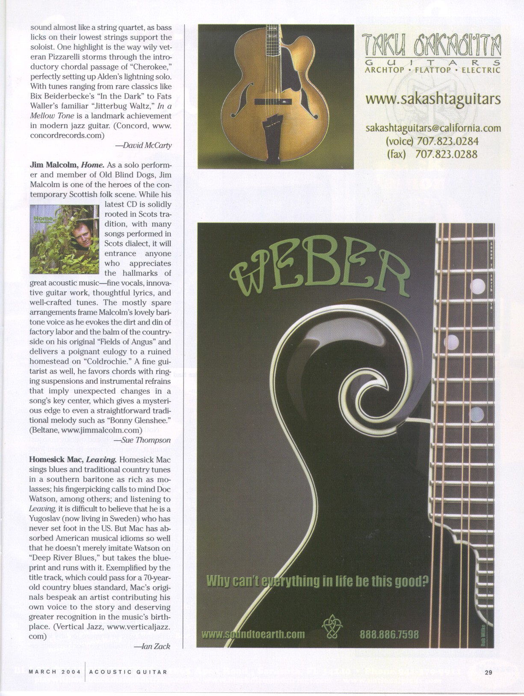
"Homesick Mac sings blues and traditional country tunes in a southern baritone as rich as molasses; his fingerpicking calls to mind Doc Watson, among others; and listening to Leaving, it is difficult to believe that he is a Yugoslav (now living in Sweden) who has never set foot in the US. But Mac has absorbed American musical idioms so well that he doesn't merely imitate Watson on 'Deep River Blues,' but takes the blueprint and runs with it."
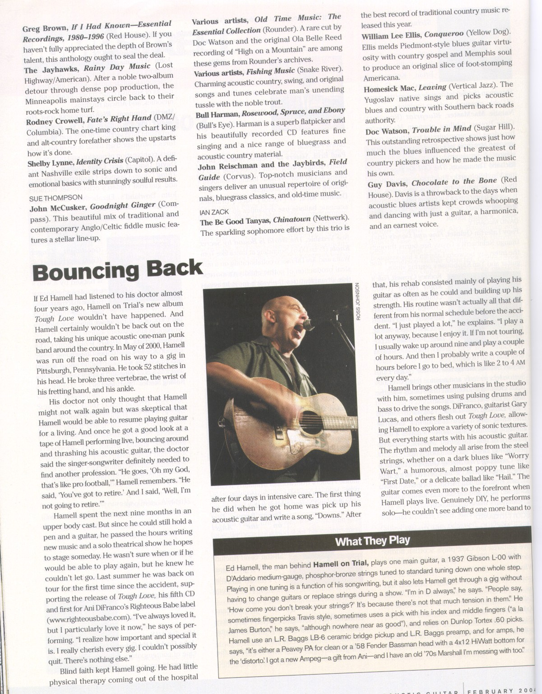
"The Yugoslav native sings and picks acoustic blues and country with Southern back roads authority."
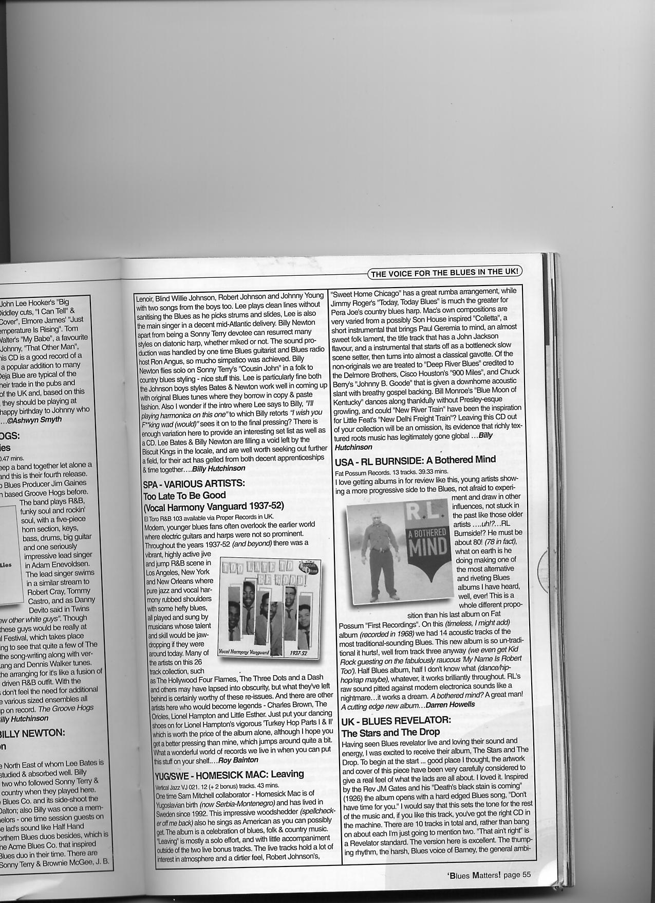
"One time Sam Mitchell collaborator — Homesick Mac is of Yugoslavian birth (now Serbia-Montenegro) and has lived in Sweden since 1992. This impressive woodshedder also sings as American as you can possibly get. The album is a celebration of blues, folk and country music — and a solo effort of considerable accomplishment."
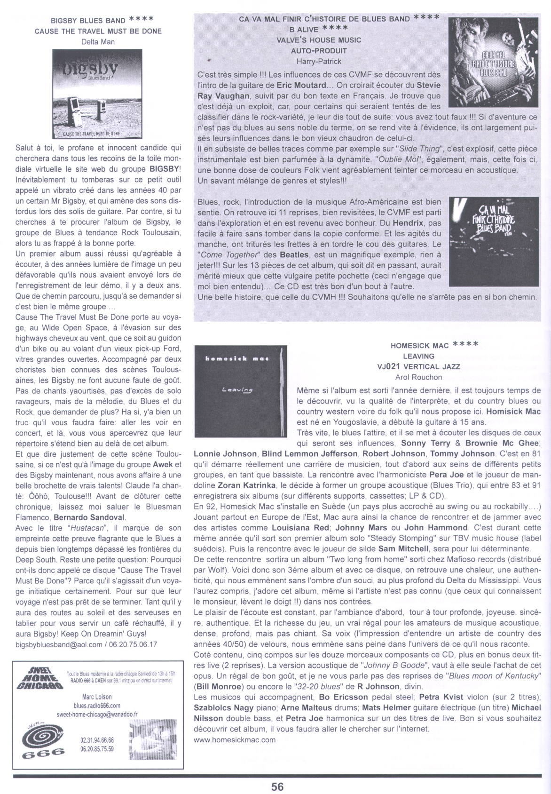
"Le plaisir de l'écoute est constant, par l'ambiance d'abord, tour à tour
profonde, joyeuse, sincère, authentique. Et la richesse du jeu, un vrai régal
pour les amateurs de musique acoustique, dense, profond, mais pas chiant."
Translation: "The pleasure of listening is constant — alternately deep, joyful, sincere, authentic. And the richness of the playing is a true delight for lovers of acoustic music: dense, profound, but never dull. His voice takes you effortlessly into the world of 1940s and 50s country artists. The acoustic version of 'Johnny B. Goode' alone is worth the price of the album."
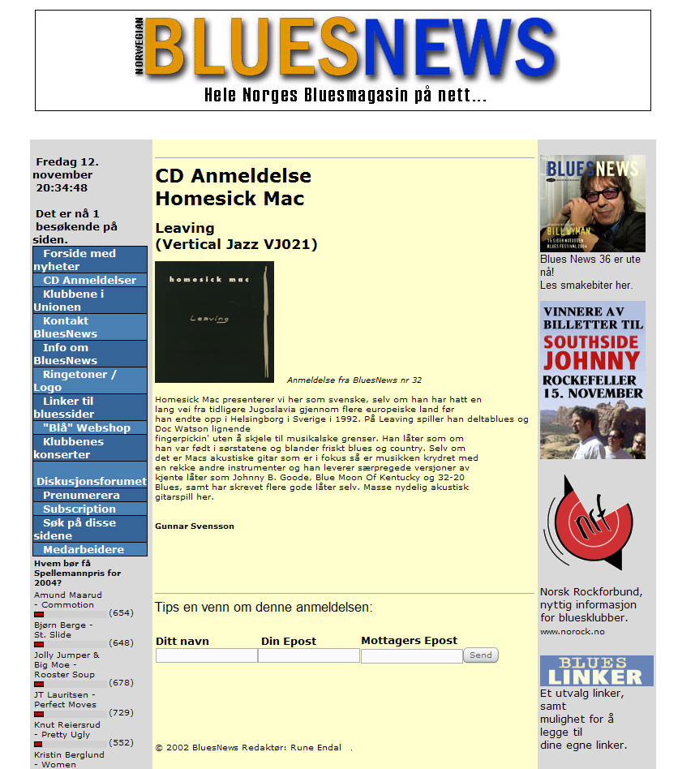
"Han låter som om han var født i sørstatene og blander friskt blues og country.
Masse nydelig akustisk gitarspill."
Translation: "He sounds as if he was born in the Southern states and mixes fresh blues and country without crossing musical boundaries. He delivers distinctive versions of well-known songs, as well as having written several good songs himself. A great deal of beautiful acoustic guitar playing."
"Varför är inte Homesick Mac berömd i förhållande till sitt fenomenala spel
och sin utomordentliga sång?"
Translation: "Why isn't Homesick Mac famous in relation to his phenomenal playing and extraordinary singing? Homesick Mac is one of the most phenomenal guitarists I have heard in the genre. Like many other artists today who draw freely from tradition, he renews the overly familiar from within. His playing is equally astonishing on regular or 12-string acoustic guitar as with the bottleneck technique on his metal guitar. He sings excellently, as relaxed as he plays."
"Mac är skicklig, rutinerad och alltid lika pålitlig i sin musikaliska
hoppfullhet — aldrig en destruktiv ton..."
Translation: "Mac is skilled, experienced and always equally reliable in his musical optimism — never a destructive note."
"En professionell entertainer, som med sin säkerhet och karisma, gång efter
gång fick den fulltaliga torsdagspubliken att uppleva Helsingborgarens
enmansshow som en komplett orkester."
Translation: "A professional entertainer who, with his confidence and charisma, again and again took the capacity Thursday audience through a one-man show that felt like a complete orchestra. In an instrumental number with divinely gifted slide performance, I experienced an equivalent feeling to what world guitarist Mike Stern conveys when playing his classic solo. It is not always enough to be a guitar virtuoso — you must also possess the art of captivating an audience. That Mac possesses both qualities, there is absolutely no doubt."
"Mac behärskar i stort taget alla stilar. Mac har blivit sann gitarrvirtuos,
en nutida Tampa Red, även till känslan."
Translation: "Mac masters virtually every style. After a while listening, it struck me: Mac has become a true guitar virtuoso, a contemporary Tampa Red, even in feeling. From Delta blues to country, with a subtle jump to hokum or country blues — quick switching from Dobro to wooden acoustic guitar: that gives variety to the music. In a short time he has developed into a confident entertainer."
Written for the "Leaving" CD booklet by Scott Barretta, then Editor of Living Blues — the most prestigious blues magazine in the United States.
— Scott Barretta, Editor · Living Blues Magazine"I first encountered Homesick Mac's music in a damp cellar tavern in north Denmark, just a stone's throw from one of literature's most famous old haunts, Elsinore Castle. A sign at the tavern's entrance suggested Mac was American, and an evening of well-executed blues, rags, and breakdowns gave no reason to expect otherwise. In fact, Mac's penchant for readily switching between Delta blues and Doc Watson-style fingerpicking and his healthy disregard for genre boundaries suggested to me that he was from the South."
"Turns out Mac was a southerner — just not from these parts. A native of former Yugoslavia, Mac grew up with relatively little access to the records of his musical heroes, but devoured those that he came by. During the '80s his musical stomping grounds expanded northward from Belgrade into Czechoslovakia, Hungary, Austria, Italy, and Germany, and in 1992 Mac settled in Helsingborg, Sweden."
"It didn't take long for Mac to seal his reputation as one of the leading acoustic guitarists in Scandinavia, and as this CD suggests, his success has had as much to do with his commitment to entertainment values as his technical skills. The music here reflects the diversity of his live shows, with tips of the hat to bossmen Muddy Waters and Bill Monroe, creative reworkings of workhorses by Chuck Berry and Robert Johnson, and a couple classic train songs thrown in for good measure."
Click any photo to view full size. Right-click → Save Image to download. High-res versions suitable for print. Web versions for digital use.
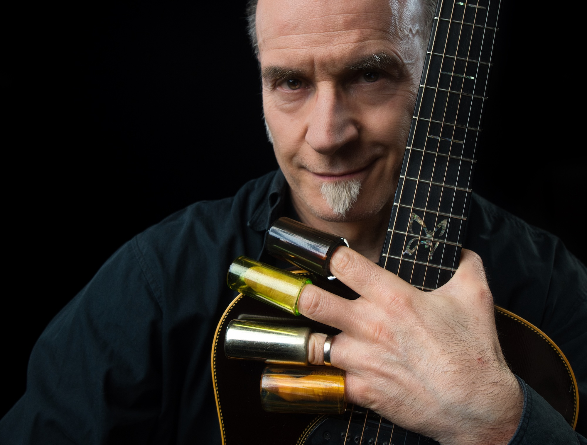
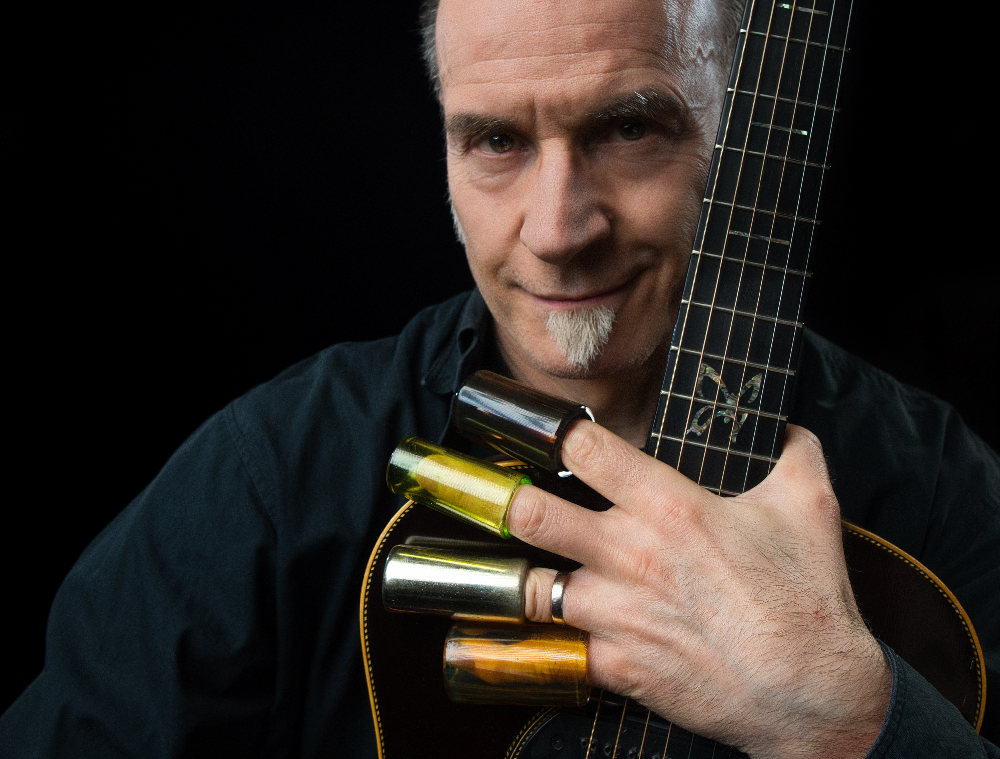
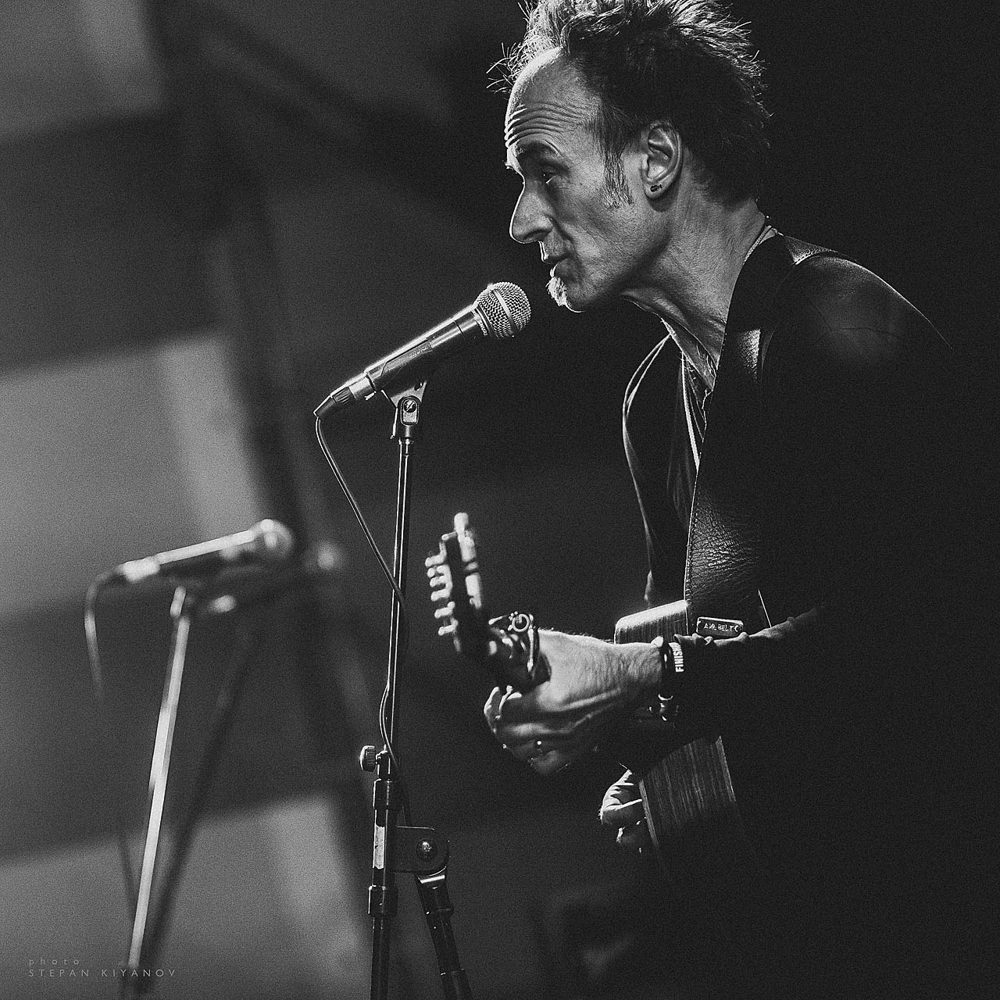
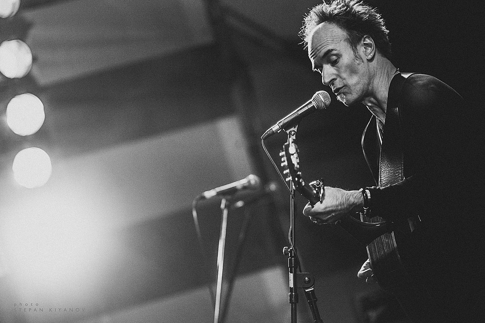
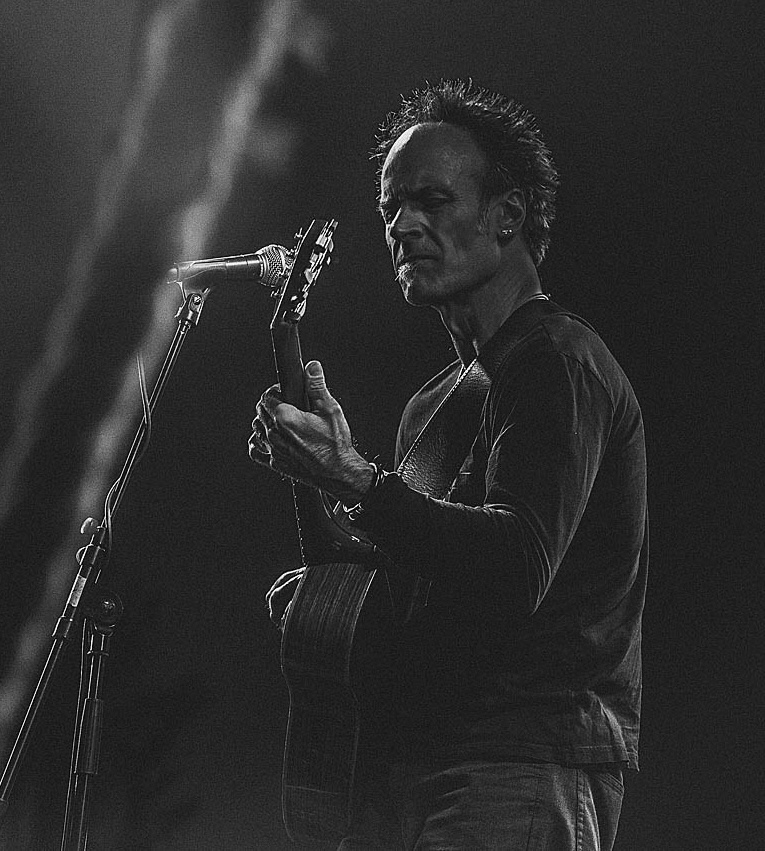
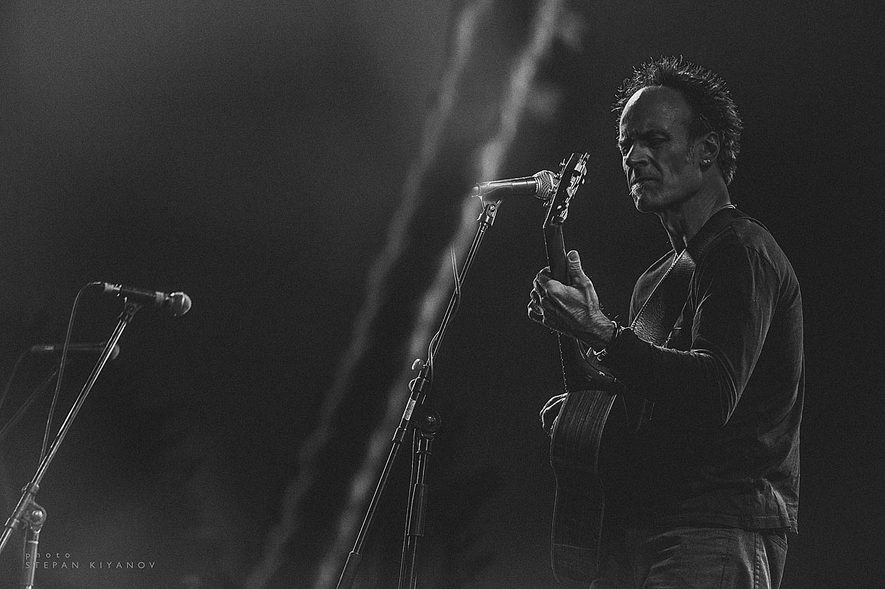
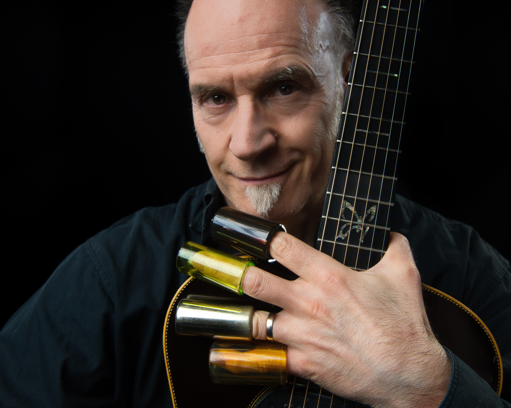
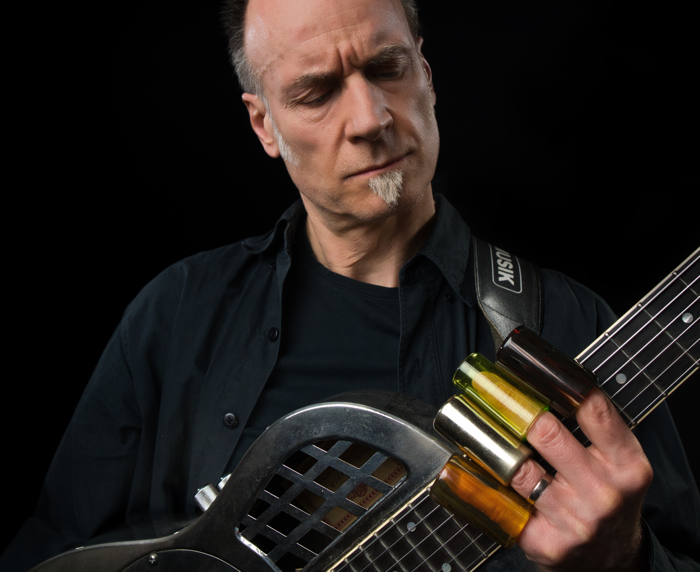
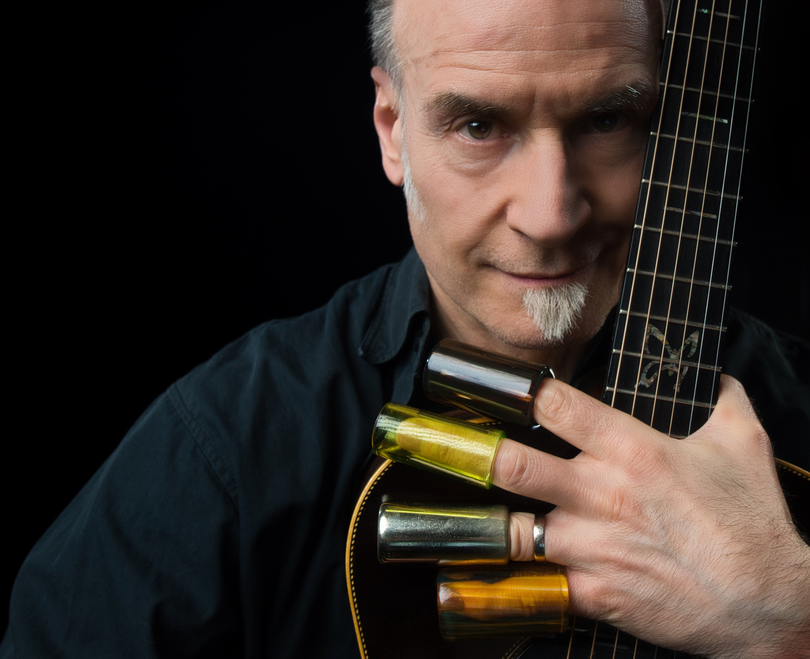
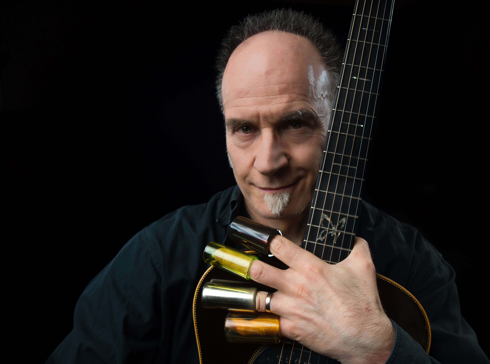
For interview requests, additional press materials, or booking information — get in touch directly.
Contact Mac